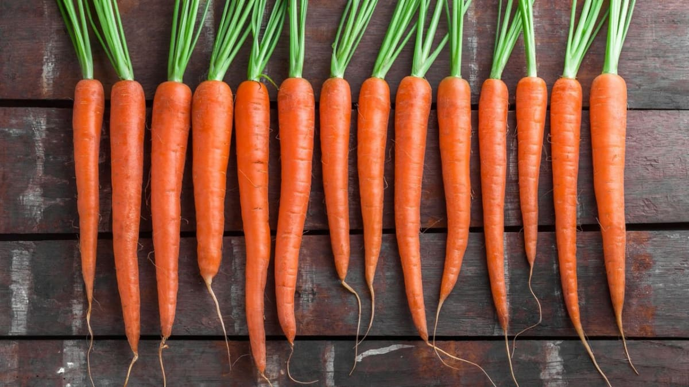

Zdravotní přínosy mrkve jsou velmi široké, působí pozitivně na snížení hladiny cholesterolu, jako prevence infarktu, odvrácení určitých druhů rakoviny, zlepšení zraku a snížení příznaků předčasného stárnutí. Dále mrkev podporuje zdraví pokožky, posiluje imunitní systém, zlepšuje trávení, prospívá kardiovaskulárnímu zdraví, detoxikuje tělo a podporuje orální zdraví různými způsoby. Mrkev patří mezi nejpoužívanější a nejoblíbenější zeleninu (kořenová zelenina) v Evropě, ale též ve světě. Je to hlavně proto, že se snadno pěstuje a je velmi univerzální z hlediska použití do různých pokrmů a kultury jednotlivých kuchyní a jídel. Obvykle má oranžovou barvu, ale existuje i fialová, bílá, žlutá a červená mrkev. Naše běžná mrkev pochází z divokých druhů Evropy a jihozápadní Asie. Největší producent mrkve je nyní Čína, která ji vyváží do celého světa a nejčastěji se používá do salátů, polévek, jako příloha, patří mezi základní ingredience v mnoha receptů. Je ale vhodná pro přímou konzumaci. Nejlepší je čerstvá přímo ze záhonu, je sladká a křupavá, to je důvodem, proč je tak oblíbená). Mrkev je zdrojem beta-karotenům a vlákniny. Tato kořenová zelenina je také dobrým zdrojem antioxidantů. Obsahuje vitamín A, C, K, B8, kyselinu pantothenovou, kyselinu listovou, draslík, železo, měď a mangan.
| Energetická hodnota | 35 kcal |
|---|---|
| Bílkoviny | 1g |
| Sacharidy | 7g |
| Tuky | 0,22g |
| Vláknina | 4g |